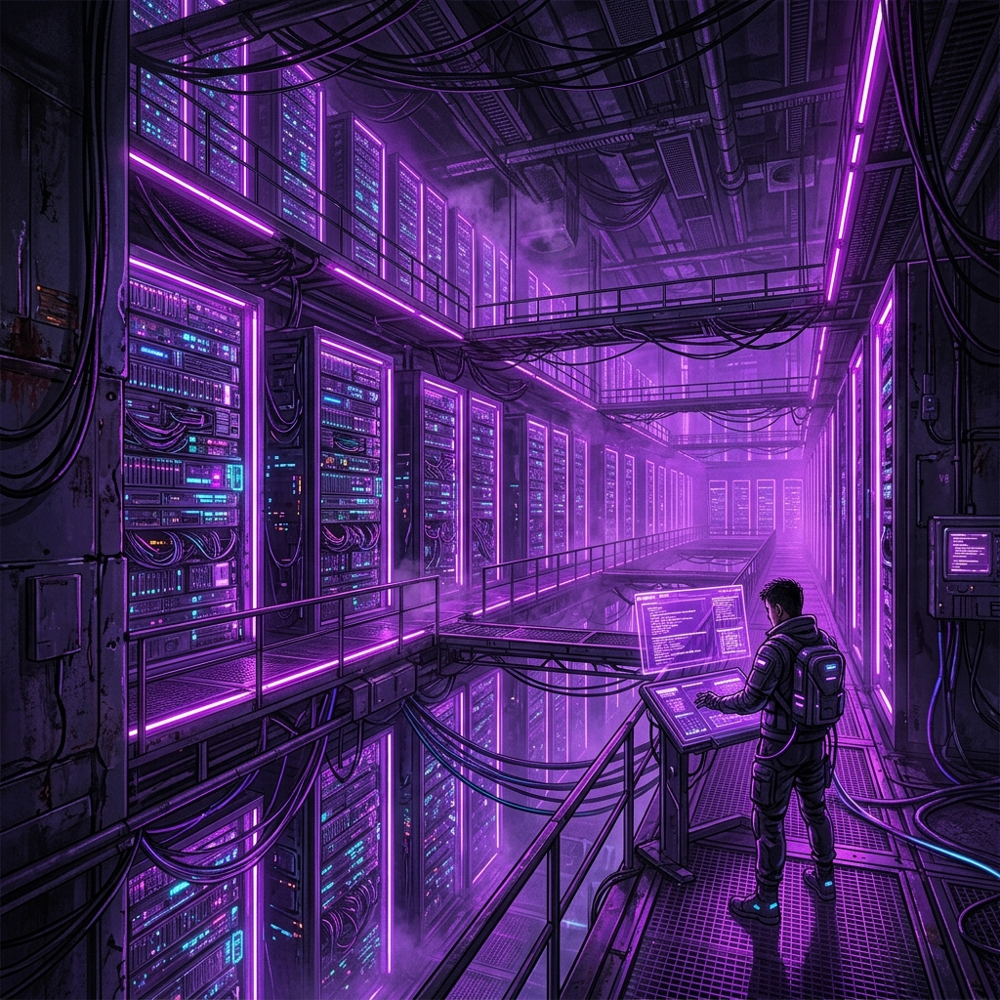

Este nodo forma parte de una arquitectura balanceada diseñada para garantizar la máxima disponibilidad de servicios críticos. La infraestructura utiliza un Proxy Inverso Nginx en alta disponibilidad.

A continuación se muestra un clip de monitorización de red: